A scan is a grayscale image stacked into thirds, with B -> G -> R. When you cut it along thirds and stack them, you get a color image but poorly blurred, since the camera and the plate moved slightly between exposures. The idea is to execute some set of shifts (dy,dx) that puts green and red on blue.
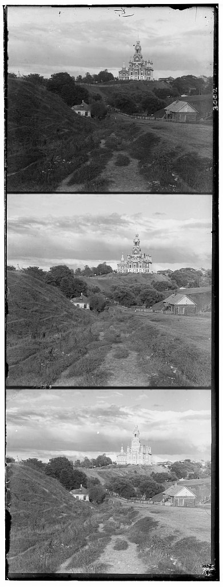
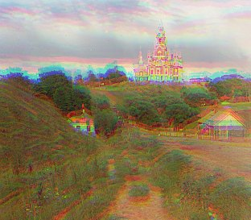
For the small JPEGs, (about 390 × 340 px per channel), we can brute force by searching a window of (dy,dx) in [-15,15], trying every possible shift of green and red channels. That yields 31*31 = 961 candidates for a full search. We take the argmin of (dy,dx) of the normalized cross correlation loss.
We minimize -NCC so it acts like an L2 loss where lower is better. Two things
mattered a lot here.
First, crop the borders. The plate edges have black frames, scratches and scanner noise that look the same in every channel no matter the shift, so they pull the match toward (0,0). We cut 10% off each side of every channel before aligning.
Second, only score the overlap. np.roll wraps pixels around, so shifting by 12 rows
pastes the bottom 12 rows onto the top. For each search we only compare the interior, trimmed by
the largest shift being tried.
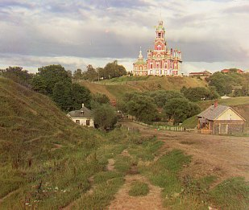
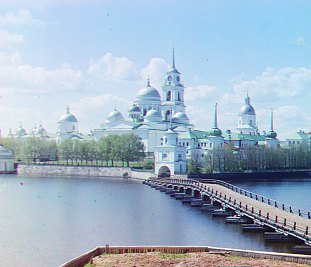
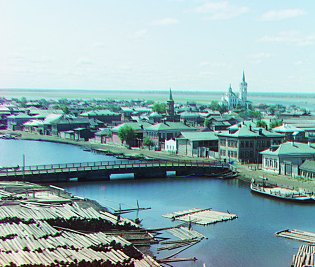
Offsets are (dy,dx) in pixels relative to blue. This is plain NCC on raw pixel values, and each image takes about 0.3s.
The .tif scans are around 3700 × 3200 px per channel, and the true shifts go past 170 px. Brute forcing that would need a [-180,180] window, so about 130,000 NCC evaluations on multi-megapixel images, which is way too slow.
Instead we build an image pyramid recursively. If the image is bigger than 200 px, we shrink
both channels by half with cv.resize (area interpolation) and solve the smaller
problem first. When the recursion returns, we double its offset and refine at the current level
with a [-2,2] search. The coarsest level does the full [-15,15] search. For a .tif that's four
halvings down to about 160 px, where [-15,15] covers [-240,240] px at full resolution, so every
finer level only has to fix rounding error.
# recursive image pyramid def align(moving, ref, min_size=200): if min(moving.shape) <= min_size: return search(moving, ref, (0, 0), 15) # coarse: wide search small_m = cv.resize(moving, None, fx=0.5, fy=0.5, interpolation=cv.INTER_AREA) small_r = cv.resize(ref, None, fx=0.5, fy=0.5, interpolation=cv.INTER_AREA) dy, dx = align(small_m, small_r, min_size) return search(moving, ref, (2 * dy, 2 * dx), 2) # fine: ±2 refine
Each full resolution .tif aligns in about 0.7s for both channels. The search here
scores Sobel edge maps instead of raw pixels, which is explained in section 05.
| Image | Channel size | Green (dy, dx) | Red (dy, dx) | Time |
|---|
I downloaded three more plates from the Prokudin-Gorskii collection and ran the same pipeline on them without changing anything.
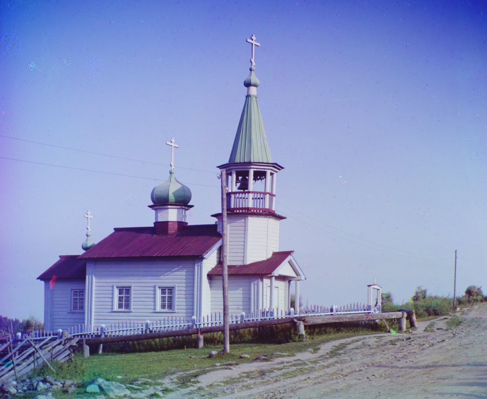
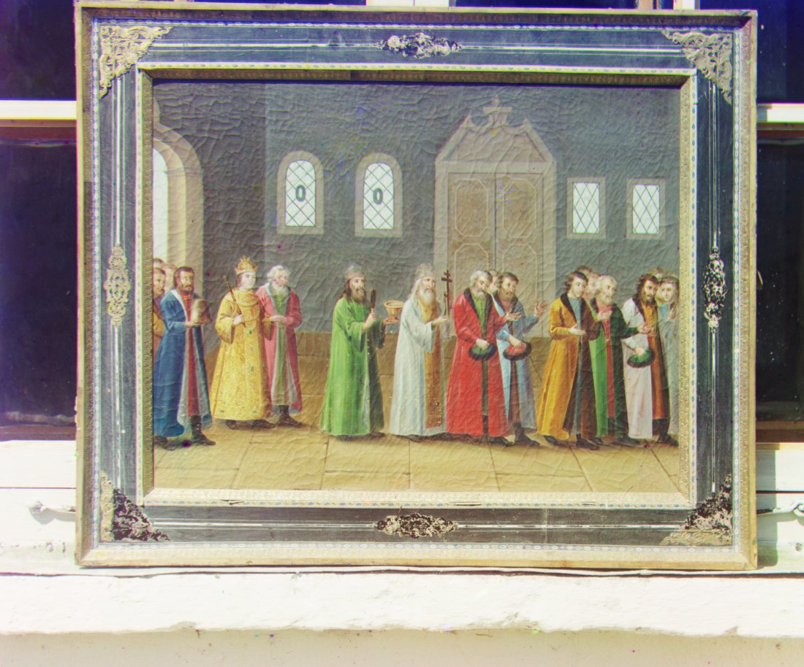
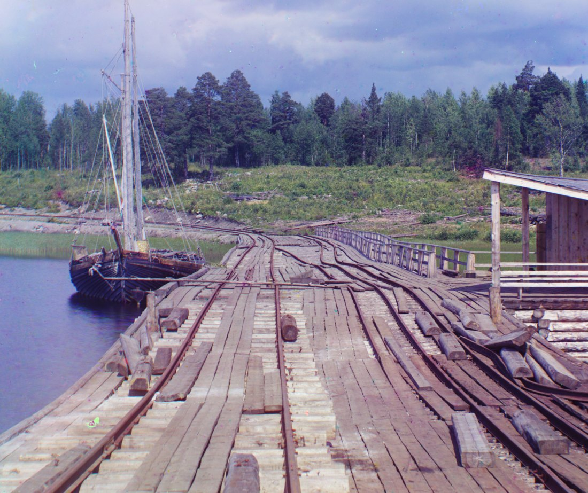
The wharf was a good test since the red channel has to move 83 px down and 16 px left, while green moves the other way. The planks also have a lot of repeated texture that could throw off the match, but it still lines up.
With NCC on raw pixel values, emir.tif clearly failed. Green came out right at (49,24), but red landed at (78,46) instead of (107,40), which is almost 30 rows off and leaves a red ghost over the whole portrait.
This is because of the robe. It's bright blue, so it shows up nearly white on the blue plate and nearly black on the red plate. NCC assumes the two channels have correlated intensities, but here the biggest high contrast object in the frame is closer to anti-correlated between B and R, so the score peaks at the wrong shift.
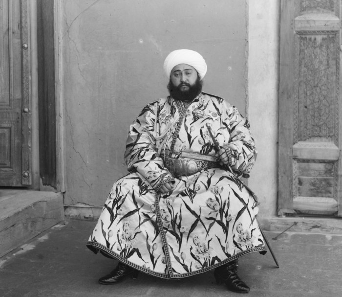
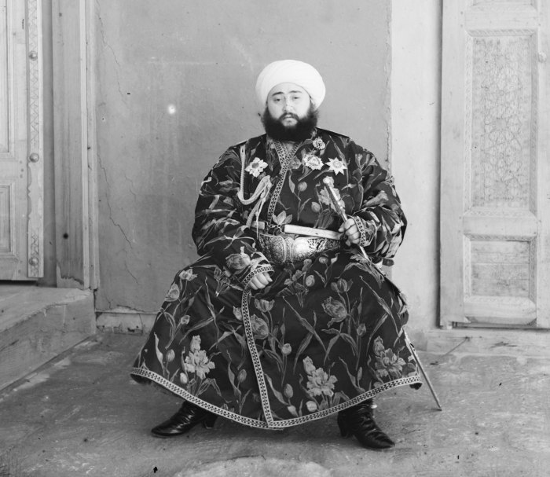
With the edge based matching below, all 14 images align, including Emir. The limit is that it only finds one global (dy,dx) per channel, so it can't fix rotation, lens distortion or a warped plate.
Brightness differs between channels, but edges show up in the same place in all three, since the outline of the robe is there whether the robe is light or dark. So before scoring, each channel goes through a Sobel filter and we match on gradient magnitude:
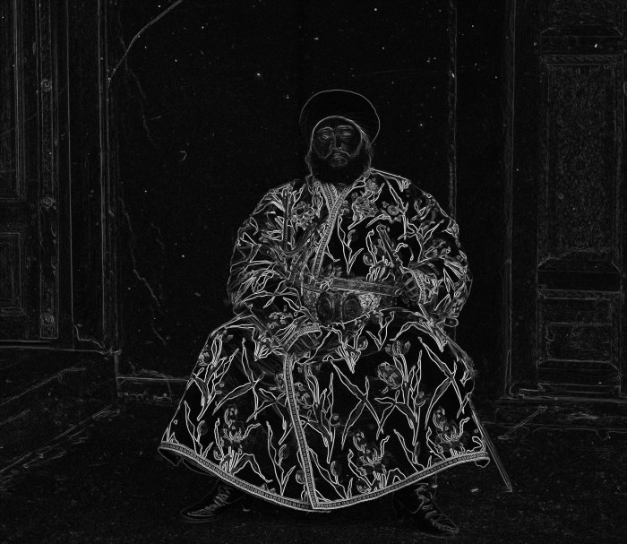
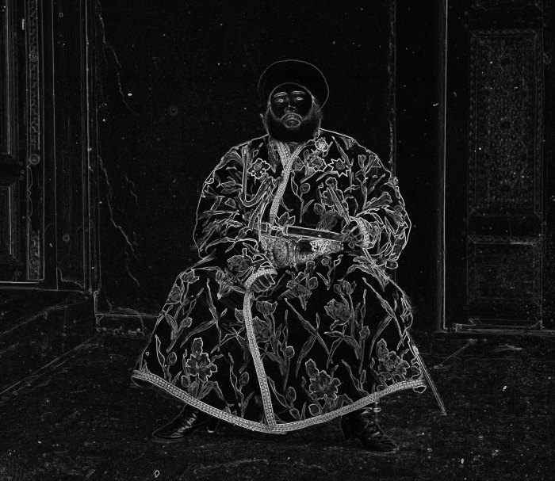
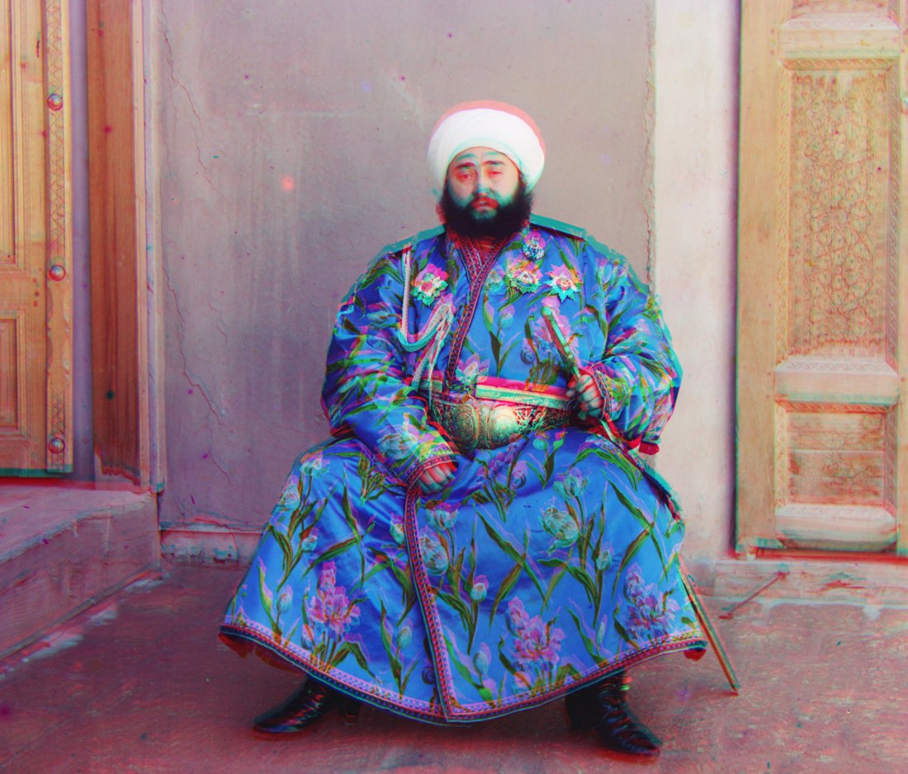
On the other 13 images the two methods agree within 1 to 3 px, for example religous_painting G (27,3) -> (30,4) and three_generations G (53,14) -> (54,12). Emir is the only one where the difference is obvious.
np.roll keeps the image the same size by wrapping, so after shifting red by 177 rows
the bottom 177 rows of red end up pasted across the top of the picture. After aligning, we crop
every row and column that any channel wrapped, so max(dy) from the top and min(dy) from the
bottom, and the same for x.
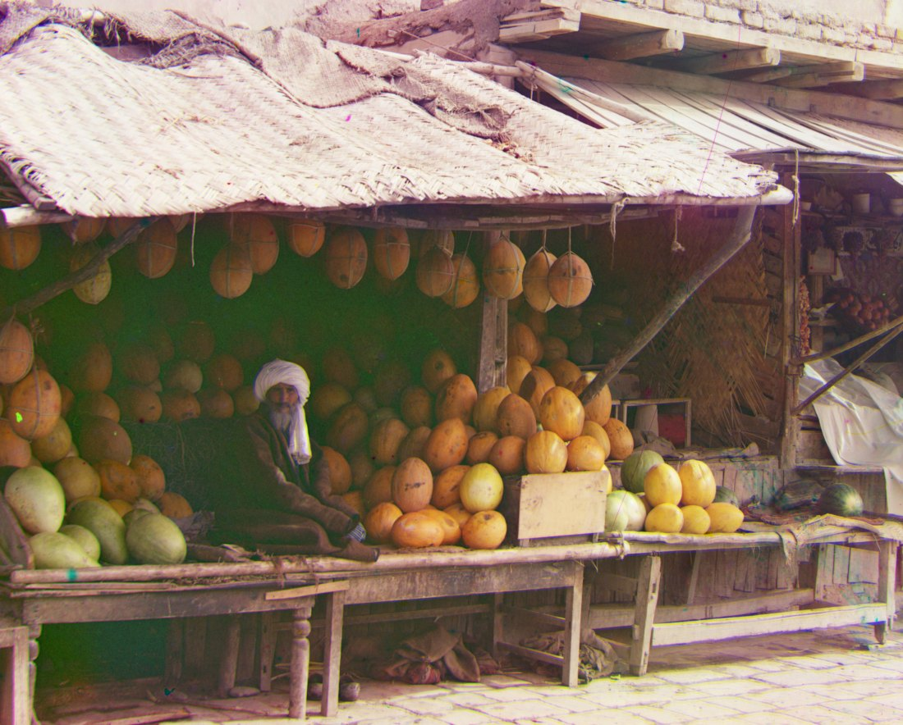
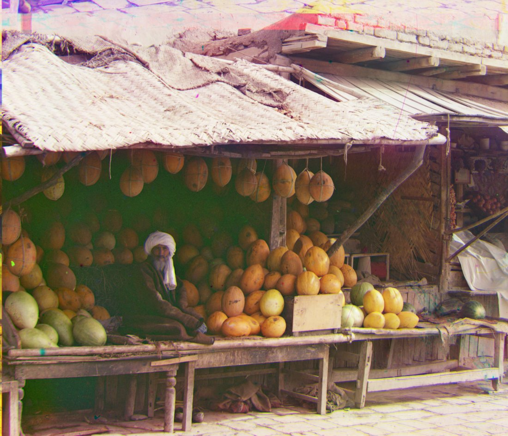
This is also why the images in the gallery have slightly different aspect ratios, since each one loses the strip its shifts wrapped.